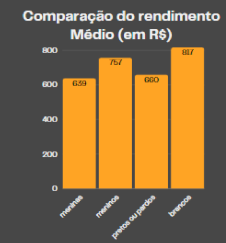
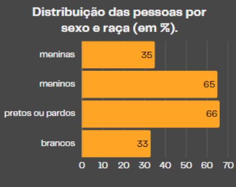
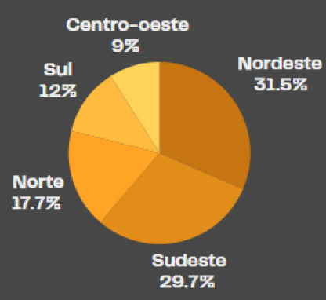

Riscos de acidente
Em 2022, havia 756 mil crianças e adolescentes exercendo as piores formas de trabalho infantil, que envolviam risco de acidentes ou eram prejudiciais à saúde e estão descritas na Lista TIP.


No Brasil
Em 2022, o Brasil tinha 1,9 milhão de crianças e adolescentes com 5 a 17 anos de idade (ou 4,9% desse grupo etário) em situação de trabalho infantil.



Ocorrência de trabalho infantil e IDH
é possível associar a ocorrência de trabalho infantil com o Índice de Desenvolvimento Humano (IDH) de cada região do Brasil, pois o IDH reflete indicadores como renda, educação e saúde, que estão diretamente ligados às condições socioeconômicas que favorecem o trabalho infantil.